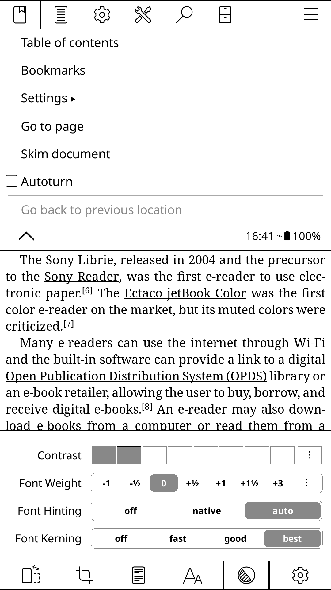

El menú Aa de SharkReader apila todo en vertical. Kindle usa tabs; Apple Books agrupa por sección; KOReader usa una barra persistente inferior. La clave es separar por categoría para que cada control sea encontrable en menos de 2 segundos.
┌────────────────────────────────────────────┐ │ Aa · Tipografía [×] │ ├────────────────────────────────────────────┤ │ FUENTE │ │ [Inter] [Georgia] [Merriweather] [Lora] │ │ [Crimson] [Slab] [OpenDyslexic] │ ├────────────────────────────────────────────┤ │ TAMAÑO [−] ─────●─── [+] 110% │ │ INTERLINEADO [−] ─────●─── [+] 1.6× │ ├────────────────────────────────────────────┤ │ TEXTO │ │ [✓ Justificado] [ Sangría] [ Sílabas] │ │ Interletraje A·A ─────●────── +0‰ │ ├────────────────────────────────────────────┤ │ COLUMNA [Estrecha] [Normal] [Ancha]│ ├────────────────────────────────────────────┤ │ TEMA DE COLOR │ │ [⬜ Claro] [🟤 Sepia] [⬛ Oscuro] [▒ Carbón]│ └────────────────────────────────────────────┘
Añadir: preset "Carbón" (#262626 bg + #cccccc texto) — Kobo lo lanzó en 2025 como alternativa entre Sepia y Dark total. Muy solicitado por lectores nocturnos.
Ya implementado: 640px (estrecha), 760px (normal), 960px (ancha). El default de 640px para scroll y 760px para paginado está alineado con los estándares de la industria.
Estrecha 640px → scroll/continuo, pantallas pequeñas Normal 760px → paginado simple, laptops ← default paginado Ancha 960px → spread doble, pantallas 4K Referencia industria: Kindle Paperwhite ~480px texto efectivo Apple Books iPad ~560px texto efectivo Kobo Libra ~520px texto efectivo
El nombre del libro ya aparece en el toolbar. La barra de progreso debería mostrar el capítulo actual — dato que currentChapterTitle ya contiene.
Actual: ┌─────────────────────────────────────────────┐ │ ████████████░░░░░░░░░ (barra de progreso) │ │ El nombre del libro (repetido) 42% │ └─────────────────────────────────────────────┘ Propuesto: ┌─────────────────────────────────────────────┐ │ ████████████░░░░░░░░░ (barra de progreso) │ │ Cap. 3: El regreso 42% │ └─────────────────────────────────────────────┘
En modo paginado, el toolbar debería ocultarse automáticamente tras 3-4 segundos de inactividad, exactamente como Kindle y Apple Books. En modo scroll, puede mantenerse visible ya que el usuario tiene menos referencia de posición.
Paginado: tap → toolbar aparece → 3s inactividad → se oculta Scroll: toolbar siempre visible (el usuario necesita anclaje) Fullscreen: tap centro → dock aparece 3s → desaparece
Esto requiere un timer de auto-hide para el modo paginado normal (no solo fullscreen).
Todos los readers top (Kindle, Apple Books, Kobo) animan el TOC entrando desde la izquierda con un overlay semitransparente. La animación actual del TOC de SharkReader es un popover vertical sin profundidad espacial.
┌──────────────────┐ ┌────────┬─────────────┐
│ │ │ TOC │ │
│ [libro] │ → │ Cap 1 │ [libro] │
│ │ │ Cap 2 │ │
└──────────────────┘ └────────┴─────────────┘
←240px→
CSS: transition: transform 0.25s cubic-bezier(0.16,1,0.3,1)
transform: translateX(-100%) → translateX(0)
KOReader ZenUI y Readest/ZenReader muestran un indicador siempre visible a baja opacidad (0.25-0.35) para que el usuario descubra cómo salir. El botón completamente invisible es un problema de discoverability.
Actual: opacity 0 en reposo → invisible → no discoverable Propuesto: ┌─────────────────────────────────────┐ │ [· · ·] │ ← opacity 0.3, siempre visible │ (48px hit area) │ ← área de click grande └─────────────────────────────────────┘ Al hover: opacity 1, scale(1.05), translateY(-2px), 0.15s ease

font-kerning: normal y font-feature-settings: "kern" 1 en el CSS de tipografía mejoraría visiblemente los textos serif.
Ningún reader top muestra chrome permanente en modo paginado. El usuario quiere leer, no ver UI.
Claro, Sepia, Oscuro, Carbón. Sin picker RGB — reduce parálisis de elección. Kobo, Kindle, Apple Books todos hacen esto.
Tamaño, interlineado, márgenes, caracter-spacing son sliders separados. Nunca un único "más grande/pequeño".
Nadie lee a 1000px. El estándar es 60-75 ch (~560-720px según tamaño de fuente). Kindle Paperwhite: ~480px.
Slide-in desde la izquierda, no modal. Con overlay semitransparente. Toca fuera para cerrar.
Kindle, Kobo y KOReader muestran el capítulo actual en el footer/progress bar — no el título del libro.
El único reader que expone kerning como opción. "Best" usa OpenType completo con hinting óptimo — diferencia visual notable en serif. Para SharkReader: font-kerning: normal; font-feature-settings: "kern" 1, "liga" 1; en el CSS de tipografía.
Kindle separa el espaciado entre párrafos del interlineado interno. Para libros sin sangría, el paragraph spacing extra es esencial. SharkReader podría añadir margin-bottom en párrafos como control separado.
Más oscuro que Sepia, menos agresivo que Dark total. Fondo #2b2b2b, texto #d4d4d4, ratio ~7:1. Resuelve el problema de lectores nocturnos que encuentran dark mode muy contrastado. Añadirlo como 4º preset de color en SharkReader.
En modo zen, un swipe hacia abajo desde cualquier punto de la pantalla muestra un overlay circular con controles (brillo, modo noche, WiFi). Más ergonómico que un botón fijo — cualquier zona del libro se convierte en el trigger.